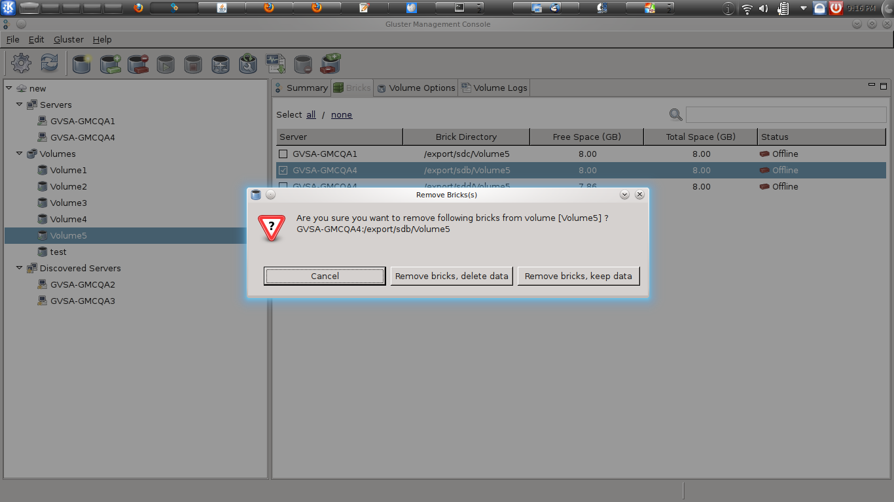

Delete a Brick
You can shrink volumes, as needed, while the cluster is online and available. For example, you might need to remove a brick that has become inaccessible in a distributed volume due to hardware or network failure.
Note: Data residing on the brick that you are removing will no longer be accessible; only the configuration information is removed - you can continue to access the data directly from the brick, as necessary.
To delete bricks from an existing volume, perform the following steps.
- Choose from the menu, toolbar, or right click and select the Volume and select Delete Bricks.
- If the volume is currently running, you are asked to confirm before deleting a brick.

- If you wish to delete the brick permanently, click Remove Bricks, Delete Data.
- If you wish to keep the data but delete the brick, click Remove Bricks, Keep Data.
The Delete Brick window is displayed indicating that the volume was deleted successfully.
[Insert Screenshot]
- Click OK.